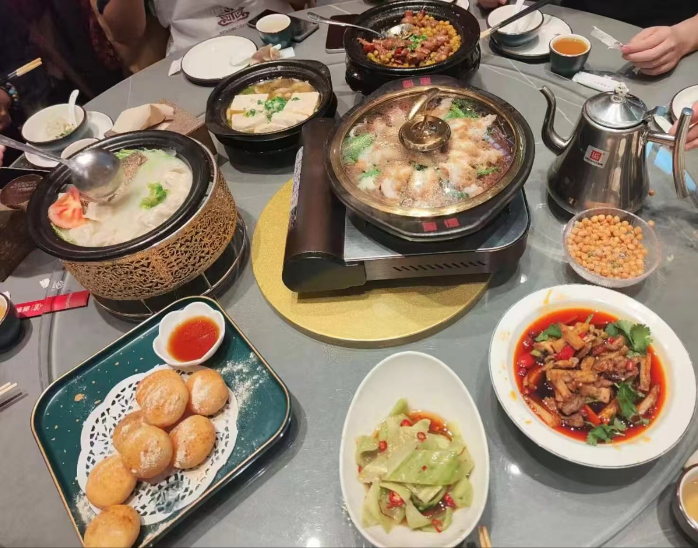
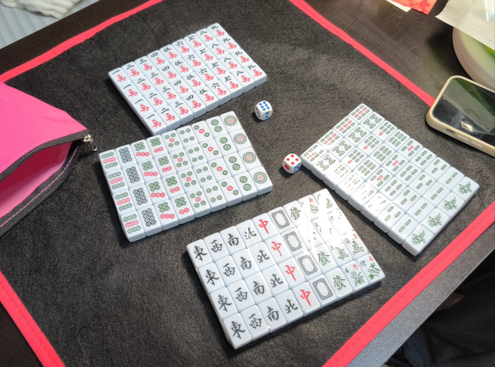

Annual Dinner
[Due to privacy concerns, I have added some mosaic effects.]
It’s a truly precious opportunity to dinner have a gathering once a year with fellow-villager. Because Jiangsu and Sichuan Province are far apart, spanning across a large portion of China, it’s natural that there aren’t many people from Jiangsu Province studying here in Chengdu. Therefore, it is awesome for us to gather two or three tables together every year. Therefore, I’m very grateful to several generations of active organizers. This is the third time I came to dinner together, which accompanied me throughout my university journey.
As we have radically different dietary habits compared to Sichuan, we choose restaurants that lean towards mild flavors, rather than spicy ones. One of our fellow-villager ordered dishes that were both affordable and delicious, which gave me the opportunity to taste most of the signature dishes at this casserole restaurant.

We come from different grades, majors, and cities, but we can naturally engage in conversation with each other. At the table I am sitting at, there are many fellow-townspeople who have been here for more than just this year, and we are more familiar with each other.
After the lunch, it’s the special program that remains consistent every year. Unlike in Sichuan where mahjong is popular, not many of us know how to play it. Instead, during the Chinese New Year, it is more common to see people playing poker. However, we are also very willing to learn from fellow-villager who know how to play and experience the joy of playing mahjong. One of them bring about a mini mahjong set.

Then it’s time for me and several friends to go grocery shopping, since there’s no supermarket like this around Jiang’an campus. It feels really good to have many common topics when it comes to food.